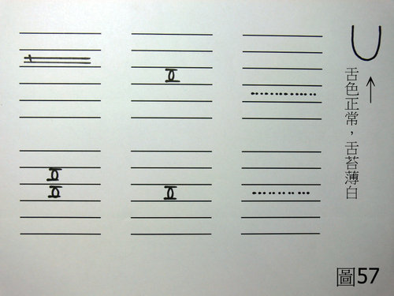

兵棋推演 1：楊過外感拖延
作者：陳建元
〈圖57〉：
假設條件：楊過男30歲左右65公斤左右，主述是一個月前感冒之後，沒有完全好，一直拖延到現在，雖然不是很嚴重，但是早晨起來總是稍有鼻涕鼻塞，喉嚨也腫腫的，吃東西時總是容易嗆到。

〈以下用科中，一日五次。即早餐後服用一次，中餐後服用一次，下午再服用一次，晚餐後服用一次，睡前再服用一次。〉
麻黃 2 荊芥 2 蒼耳子 2 炙甘草 2
熟地 1 淫羊藿 1
〈依上述比例混合之後，每次服用6克，一日五次。〉
【思路探索】：
1. 用科中治感冒，份量不能太輕，楊過體重65公斤左右，每次服用6克，一日五次，一日劑量給了30克，這是正確的劑量，中藥劑量的使用，有分急性病與慢性病的不同，如果是慢性病的話，標準劑量65公斤左右男子的話，一日四次，一次5～6克，即一日20～24克，也就足夠了，但是如果是治療感冒等急性病的話，這樣子是不容易達到有效濃度的，一日藥量依照病況可達30～60克（譬如治療溫病或法定傳染病發熱、嚴重的細菌感染、較嚴重的急性癰疽、急腹症‥‥‥的時候），這才是治療各種急性病在用的劑量，中醫不傳之秘在於劑量的總量和各個藥物間的比例，這兩項一定要抓對，因為藥物雖對，但總份量不對，這樣效果出不來；或是藥物雖對，但藥物間的比例不對，這樣效果也出不來，這是學習中醫時要注意的地方。
2. 依照外候上和病史上的證據，楊過主述是一個月前感冒之後，沒有完全好，一直拖延到現在，雖然不是很嚴重，但是早晨起來總是稍有鼻涕鼻塞，喉嚨也腫腫的，吃東西時總是容易嗆到，這是外感尚有餘邪的表現。
3. 而依照脈象上的證據，肺脈第2層浮弦的脈象也很明顯，這是代表尚有風 寒外感，脈證兩邊互相吻合，確實是風寒型的感冒，而其拖延日久的原因，在於兩尺的虛弱，兩尺一弱，人的根本不足，疾病則容易拖延。
4. 故用麻黃、荊芥除去肺系的風寒餘邪；蒼耳子一以除風邪，一做引藥引到鼻腔；稍佐炙甘草緩和麻黃、荊芥、蒼耳子的迅猛性；稍佐熟地、淫羊藿補益兩尺以助上述諸藥的運行。
5. 中醫在使用的時候，一定要按照正確的病機來用藥，不能胡亂用藥，像此假設條件中，其肺脈是實性脈象（也即實證），故其他部脈雖有虛損，但攻伐藥的總量要大於補益藥的總量，也即：
麻黃 2＋荊芥 2＋蒼耳子 2＝6 ＞ 炙甘草 2＋熟地 1＋淫羊藿 1＝4 ，這樣才是正確的。
如果開成：
麻黃 2＋荊芥 2＋蒼耳子 2＝6 ＜ 炙甘草 2＋熟地 4＋淫羊藿 4＝10
這樣整帖藥就偏向補藥了，實上加實，病情必然會加重，所以使用中藥的時候，藥味絕對不是有就算數了，只要比例不正確，加重病情甚至殺人只在舉手之間，學習中醫不得不謹慎。
【引用請先來信告知徵求同意，若有涉及販售營利等商業行為，版權所有拷貝盜用必究。】
【藥王脈學講壇】http://blog.xuite.net/drjychen/twblog